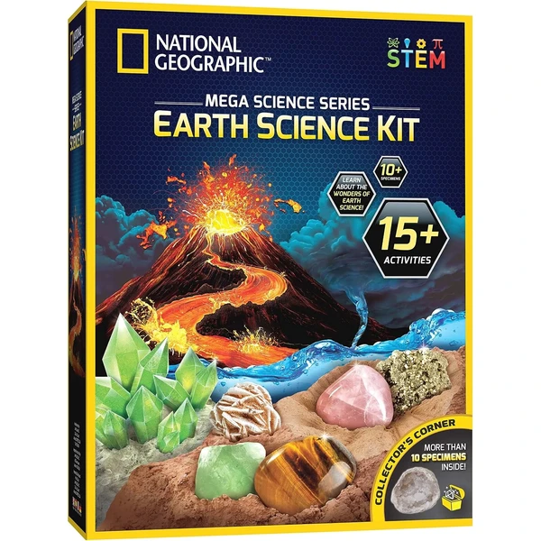
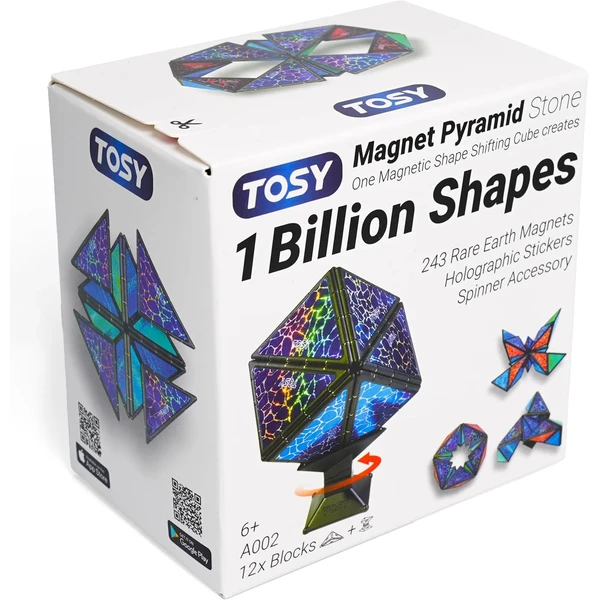
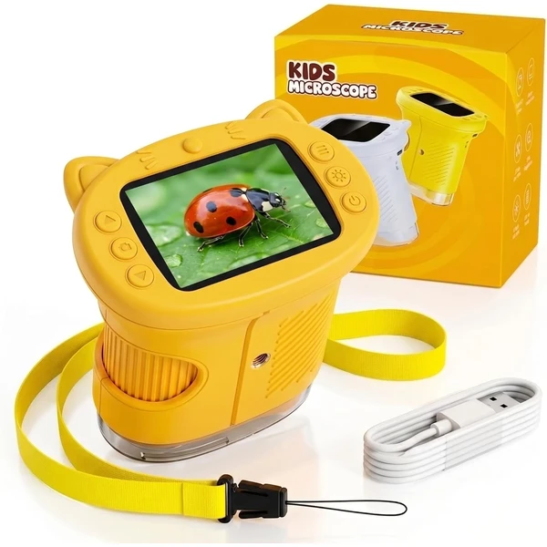
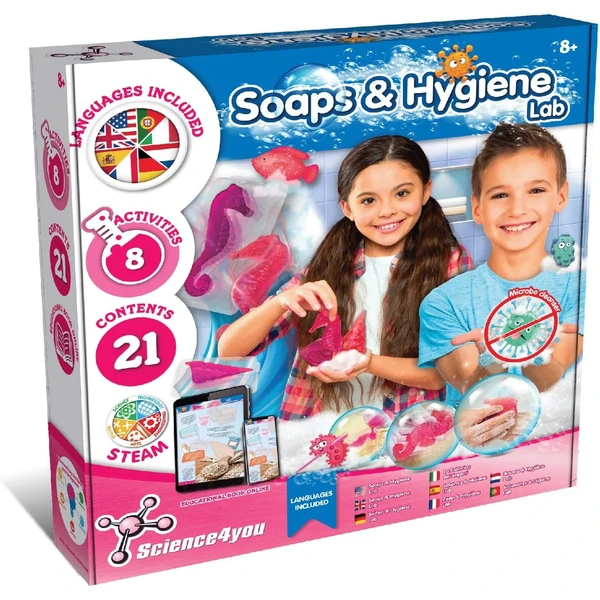
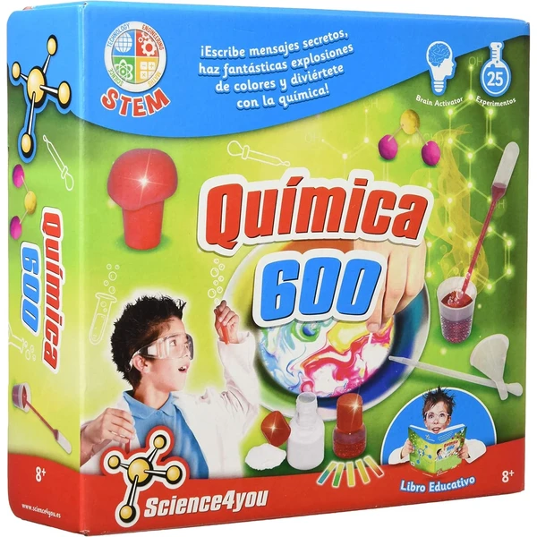

A los 10 años los kits de ciencia pueden abordar proyectos completos, desde el diseño del experimento hasta la conclusión final, con cierto rigor en el proceso. El niño ya entiende conceptos más abstractos y disfruta explicando lo que ha descubierto a otros, casi como un pequeño científico. En esta selección encontrarás juegos de ciencia pensados para esta edad.
¿Qué desarrollan los juegos de ciencia a los 10 años?
Diseñar un experimento completo, de principio a fin, es un ejercicio maduro de pensamiento científico y comunicación.
- Pensamiento crítico
- Curiosidad
- Comunicación
- Concentración
- Experimentación
- Vocabulario

National Geographic Kit de Ciencia
Un laboratorio con más de 15 actividades distintas: cultivo de cristales, un volcán en erupción, dos excavaciones geológicas y 10 piedras naturales para explorar. Incluye guía detallada para entender la ciencia detrás de cada experimento.
⭐ ¿Por qué nos gusta?
- ✔ Más de 15 actividades y experimentos distintos.
- ✔ Incluye excavaciones geológicas y cultivo de cristales.
- ✔ Guía detallada que explica la ciencia de cada experimento.
💬 Lo que más destacan las familias
Muchos padres coinciden en que la variedad de experimentos da para muchas sesiones sin repetirse, algo poco habitual en kits de este precio. La guía detallada también se valora porque explica el porqué de cada resultado.
Ver en Amazon

TOSY Magnet Pyramid Stone
Un cubo de 243 imanes que se transforma en miles de formas distintas, con accesorio giratorio incluido para ampliar las combinaciones. Estimula el pensamiento geométrico y ofrece un efecto relajante al manipularlo.
⭐ ¿Por qué nos gusta?
- ✔ 243 imanes para crear formas ilimitadas.
- ✔ Accesorio giratorio para más transformaciones.
- ✔ Mejora geometría y pensamiento creativo.
💬 Lo que más destacan las familias
Entre los comentarios más habituales aparece lo relajante que resulta manipularlo, casi como un juguete antiestrés. La posibilidad de conectar varios bloques para crear estructuras más grandes también entusiasma bastante.
Ver en Amazon

Buki Química 150 Experimentos
Un kit con 150 experimentos químicos seguros, usando ingredientes cotidianos como vinagre, aceite o bicarbonato. Incluye matraz de vidrio, tubos de ensayo y gafas de protección para un laboratorio casero completo.
⭐ ¿Por qué nos gusta?
- ✔ 150 experimentos químicos sin riesgo.
- ✔ Incluye material real de laboratorio.
- ✔ Instrucciones ilustradas paso a paso.
💬 Lo que más destacan las familias
Se repite bastante el comentario de que incluir material de laboratorio real, como el matraz de vidrio, hace que la experiencia se sienta más auténtica. Los 150 experimentos ofrecen contenido de sobra para muchas tardes distintas.
Ver en Amazon

Microscopio Digital Infantil 4K
Un microscopio digital con pantalla propia y zoom de hasta 1000X, capaz de grabar fotos y vídeos de lo que se observa. Batería recargable por USB y conexión a ordenador para compartir los descubrimientos en pantalla grande.
⭐ ¿Por qué nos gusta?
- ✔ Zoom de hasta 1000X con pantalla propia.
- ✔ Graba fotos y vídeos de las observaciones.
- ✔ Batería recargable, sin pilas desechables.
💬 Lo que más destacan las familias
Lo que más suele gustar es poder grabar y guardar lo que se observa, en vez de perderlo al apartar el ojo del microscopio. La posibilidad de conectarlo al ordenador también se valora para ver los detalles en pantalla grande.
Ver en Amazon

I'm A Genius Laboratorio de Electricidad
Un kit con más de 50 experimentos científicos sobre electricidad para convertir la casa en un pequeño laboratorio. Incluye todos los materiales necesarios junto a un manual ilustrado paso a paso.
⭐ ¿Por qué nos gusta?
- ✔ Más de 50 experimentos de electricidad incluidos.
- ✔ Manual ilustrado fácil de seguir.
- ✔ Introduce nociones básicas de física y química.
💬 Lo que más destacan las familias
Se repite bastante el comentario de que la variedad de experimentos mantiene el interés durante mucho tiempo, sin repetirse. El manual ilustrado ayuda a seguir cada paso sin necesidad de supervisión constante.
Ver en Amazon

Science4you Fábrica de Jabones
Un kit científico para aprender a crear jabones perfumados y coloridos con moldes de distintas formas. Incluye 8 experimentos y bolsas de regalo para envolver las creaciones terminadas.
⭐ ¿Por qué nos gusta?
- ✔ 8 experimentos para crear jabones distintos.
- ✔ Moldes con formas variadas, como peces o estrellas.
- ✔ Incluye bolsas para regalar las creaciones.
💬 Lo que más destacan las familias
Lo que más suele gustar es poder regalar los jabones hechos en casa gracias a las bolsas incluidas, algo que da mucha satisfacción a los niños. Combina bien química básica con un resultado final útil y perfumado.
Ver en Amazon

Science4you Química 600
Un kit con 25 experimentos químicos seguros, desde mensajes secretos hasta explosiones de colores controladas. Incluye una amplia gama de instrumental de laboratorio y sustancias certificadas.
⭐ ¿Por qué nos gusta?
- ✔ 25 experimentos químicos certificados y seguros.
- ✔ Amplio instrumental de laboratorio incluido.
- ✔ Combina diversión con aprendizaje real de química.
💬 Lo que más destacan las familias
Una característica muy mencionada es lo llamativos que resultan experimentos como las explosiones de colores, que generan mucho entusiasmo. El instrumental incluido se valora por parecer más profesional que otros kits similares.
Ver en Amazon

EDUMAN Kit de Excavación de Ámbar
Un set para excavar 7 piezas de ámbar con insectos reales incrustados, usando martillo, cincel y lupa como una auténtica exploración arqueológica. Incluye guía para identificar cada insecto descubierto.
⭐ ¿Por qué nos gusta?
- ✔ Incluye herramientas reales de excavación.
- ✔ Insectos auténticos incrustados en ámbar.
- ✔ Guía incluida para identificar cada hallazgo.
💬 Lo que más destacan las familias
Lo que más suele gustar es la emoción de ir descubriendo cada insecto poco a poco, como una búsqueda del tesoro real. La posibilidad de convertir el ámbar en colgante también añade un aliciente extra al final del juego.
Ver en Amazon